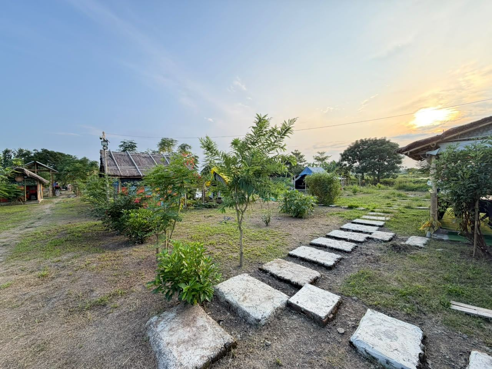
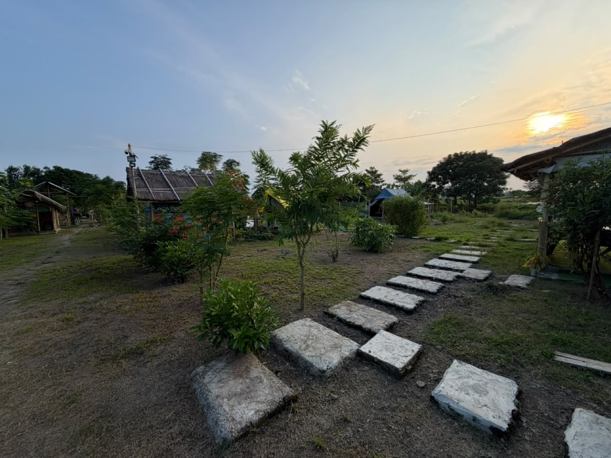
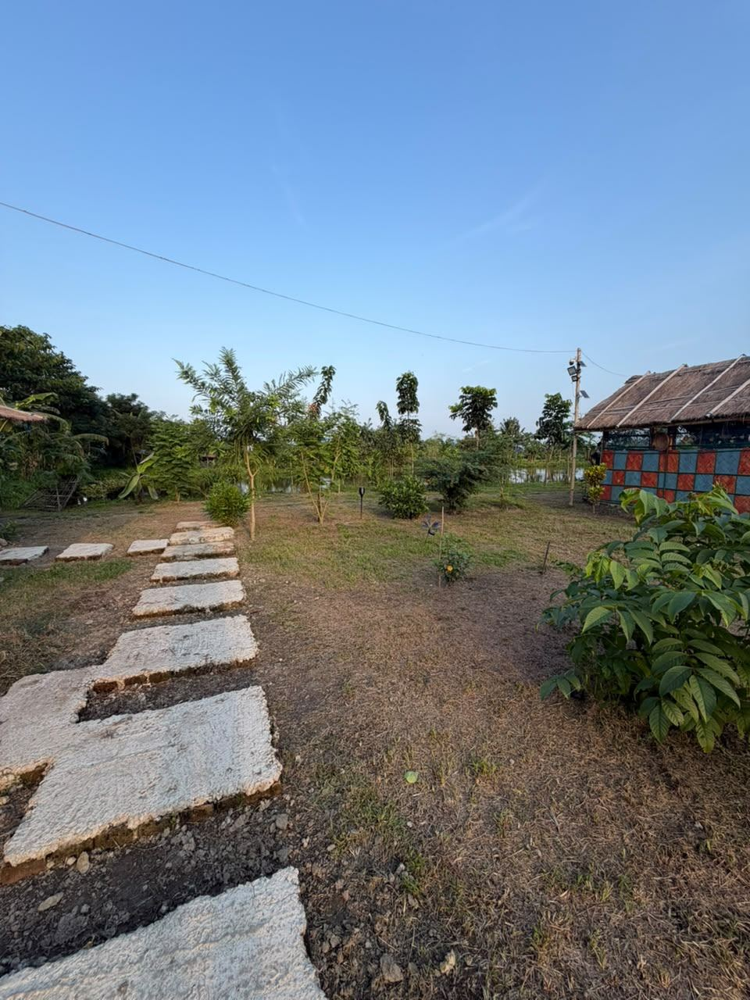

Home / Gallery
Gallery
-

The bamboo gate, with two jaapis -

The grounds in the evening -

The stone path at sunset -

The yellow tent between the thatched shelters -

Canvas tent by the water -

Thatched shelter -

The path -

The water -

A meal on steel plates